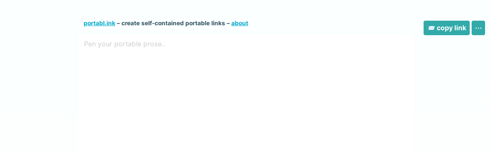

I just released a small weekend project called portabl.ink. It’s a tool to compress whole web pages into a self-contained portable link.
Try it out online at kalabasa.github.io/portabl.ink!

For some examples and more details, read the project page.
Next, I will write another post on how it works under-the-hood. Stay tuned!